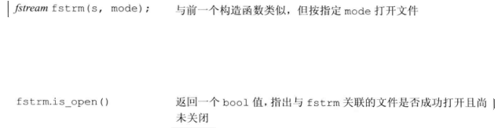
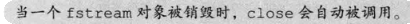
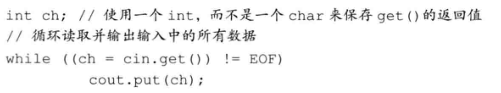
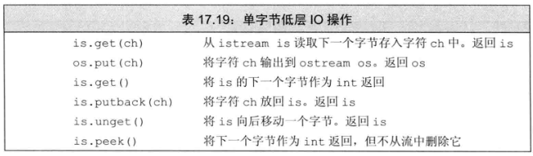
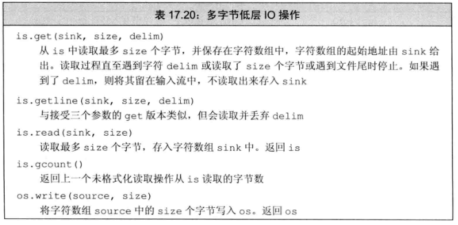
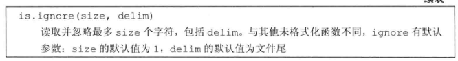

IO类
格式化IO
通用
副本/拷贝 控制
条件状态：指示能否执行IO操作的bit
缓冲区控制


关联到输出流：使得调用流在输入、输出时先刷写特定输出流的缓冲区
格式状态：控制格式化
操纵符 ：改变格式状态
使用建议
分为两类：改变数值输出形式 、控制补白的数量和位置
boolalpha
进制
hex oct dec
showbase
uppercase 大写的十六进制
浮点数格式
精度 precision() / setprecision
-
setprecision(N)
非操纵符 precision()
fixed 定点小数
showpoint 强制显示小数点
scientific 科学记数法
hexfloat 十六进制小数
defaultfloat 默认
空白与对齐
默认行为
left/right 左右对齐
setw下次输出的空白数
setfill 改变默认空白符
internal 在负号和数字之间插入空白（setw指定)
noskipws 不丢弃输入的空白符
操纵符表
文件流 fstream


open失败会导致failbit被设置
对已经open的流再次调用open会导致failbit被设置，进而使得之后对该文件流的操作均失败
文件模式
字符串流 stringstream
处理行内单词用 istringstream
一部分一部分地构造输出字符串时用 ostringstream
无格式IO ： 字节流
单字节IO
get(ch)/put(ch) 指定char的读写
返回int的读取 get/peek

-

放回 putback/unget

多字节IO
读取一行
get(数组 ,size ,换行符) 保留换行符
getline(数组，size，换行符） 丢弃换行符
读写指定字节数
os.write(数组，size)
is.read(数组，size)
读取并忽略指定字节数
ignore(size , 终止符=EOF) 默认也将EOF看作一个可忽略的字符，计算在size中
最近读取的字节数 gcount


随机访问tell/seek
bitset